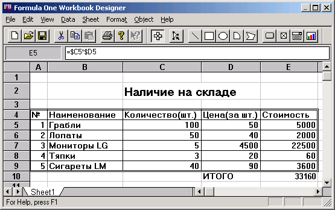
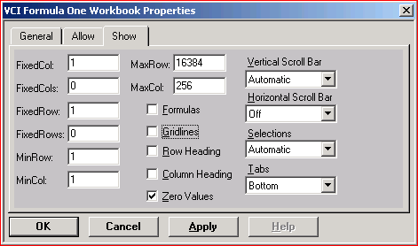

Страницы Excel – компонент F1Book
3.4.4 Страницы Excel — компонент F1Book
Очень интересным компонентом является F1Book на странице ActiveX. Этот компонент позволяет встроить в ваше приложение таблицы типа Excel (рис. 3.14), которые пользователь может заполнять соответствующими числами, а компонент будет производить по заданным формулам вычисления и тут же отображать их результаты в указанных ячейках. В таблицу можно встроить диаграммы и графики различных типов. И все изменения, вносимые пользователем в данные таблицы, немедленно будут отображаться в диаграммах. Таким образом вы можете включать в свое приложение различные бланки смет, счетов, ведомостей, с которыми будет работать пользователь, различные таблицы, производящие статистические или технические расчеты и т.п.
Рис. 3.14 Приложение с компонентом F1Book 
Перенесите на форму компонент F1Book и щелкните на нем правой кнопкой мыши. Выберите из всплывшего меню команду Workbook Designer. Перед вами появится диалоговое окно проектирования, представленное на рис. 3.15. Те, кто знаком с программой Excel, могут увидеть, что это окно является несколько упрощенным вариантом Excel. Проектирование таблицы производится фактически по тем же правилам, что и в Excel. Вы можете писать в ячейках необходимые надписи, задавая шрифт, его стиль, обрамление. Можете записывать формулы. Так на рис. 3.14 и 3.15 последний столбец представляет собой стоимость соответствующего товара, являющуюся произведением его количества на его цену. А ячейка внизу таблицы суммирует стоимость всех товаров.
Рис. 3.15 Диалоговое окно проектирования компонента F1Book 
Правая быстрая кнопка на рис. 3.15 позволяет ввести на страницу диаграммы и графики. Чтобы задать диаграмму, надо сначала выделить курсором в таблице данные, которые должны отображаться в диаграмме, затем нажать кнопку ввода диаграммы, после этого указать курсором рамку, в которой должна отображаться диаграмма. В результате вы попадете в диалоговое окно, в котором сможете выбрать тип диаграммы и необходимые ее атрибуты.
Рассказывать подробно о работе с окном проектирования компонента F1Book невозможно из-за ограничения на объем данной книги. Те, кто знаком с Excel, без труда смогут в этом окне ориентироваться. К тому же в нем имеется встроенная справка, вызываемая командой меню Help или клавишей F1.
Щелкнув правой кнопкой мыши на компоненте F1Book, вы можете выбрать еще одну команду — Properties. В появившемся при этом диалоговом окне (рис. 3.16) вы можете, в частности, задать опции, определяющие, что будет видно или не видно в таблице при работе приложения: заголовки строк и столбцов (Row Heading и Column Heading), сетка (Gridlines), формулы вычислений (Formulas) и т.п.
Рис. 3.16 Диалоговое окно задания свойств объекта F1Book

Из книги: А.Я.Архангельский "100 компонент общего назначения библиотеки Дельфи 5"